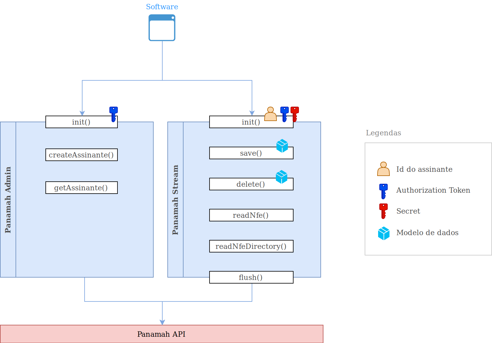
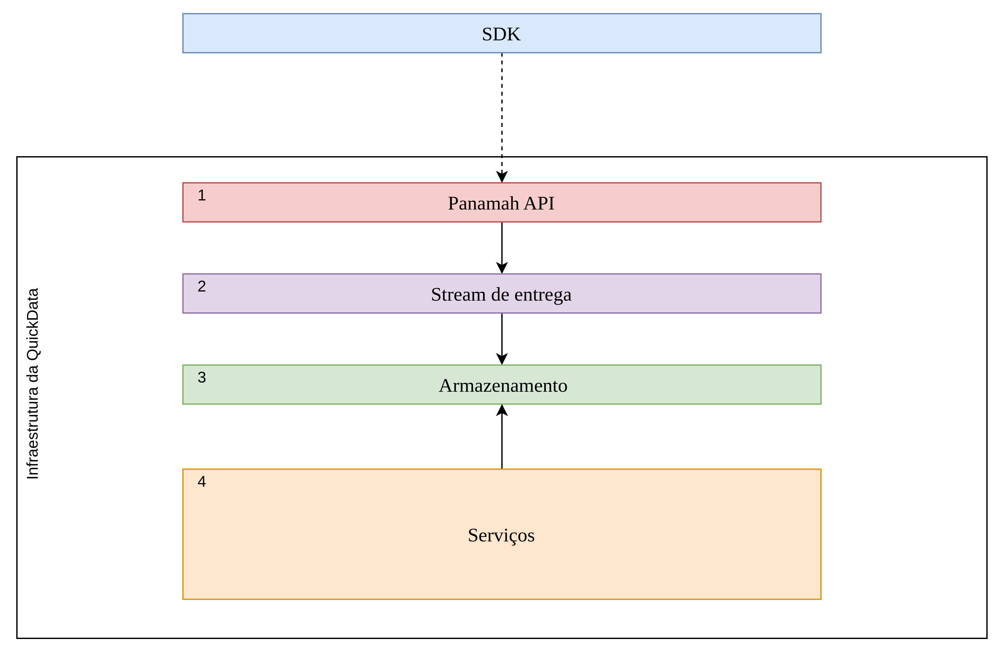

# Introdução
O PanamahSDK é dividido em três partes: PanamahStream, PanamahAdmin e os modelos de dados prefixados com Panamah, e. g.: PanamahLoja ou PanamahProduto.
PanamahStream: API de manipulação dos dados. Permite o envio ou remoção de dados através dos métodossave()edelete(), também disponibilizando a leitura de documentos fiscais através dos métodosreadNFe()ereadNFeDirectory(). A leitura de documentos fiscais os transforma em modelos de dados, permitindo que o software apenas complemente propriedades que não são enviadas para SEFAZ, como por exemplo, o id da seção de um produto. Além disso, o Stream possui hooks que são úteis tanto na validação quanto na adição de informações.PanamahAdmin: API de gerenciamento administrativo. Permite a criação e leitura de assinantes.Modelos de dados: Os modelos de dados são utilizados pelas APIs para executar ações no servidor. Eles são a implementação da estrutura dos dados no Panamah, porém são validados localmente antes de serem salvos ou deletados, permitindo agilidade e evitando requisições desnecessárias.

Assinantes são os clientes que adquirem o software da empresa parceira. Empresas parceiras consomem os serviços do Panamah.
# Credenciais e tokens
Todos os parceiros recebem um par de tokens de autenticação chamados AuthorizationToken e Secret, que são usados para autorizar o uso das APIs do SDK. Esses tokens devem ser mantidos de forma segura, sob o risco de uso indevido por terceiros.
Para obter os tokens de autenticação, o AuthorizationToken e o Secret, você precisa seguir os seguintes passos:
Entre em contato com a equipe responsável pela QuickData para solicitar os tokens de autenticação necessários.
Após receber os tokens, defina-os como variáveis de ambiente em seu ambiente de desenvolvimento ou sistema operacional. Para fazer isso, siga as etapas relevantes ao seu ambiente:
Windows:
- Abra o Painel de Controle e acesse as Configurações do Sistema.
- Clique em "Variáveis de Ambiente".
- Em "Variáveis do Usuário", clique em "Novo" para adicionar uma nova variável.
- Defina o nome da variável como "PANAMAH_AUTHORIZATION_TOKEN" e insira o valor do AuthorizationToken fornecido.
- Repita o processo para adicionar a variável "PANAMAH_SECRET" com o valor do Secret fornecido.
- Salve as alterações e feche as janelas do Painel de Controle.
Linux / macOS:
- Abra o terminal.
- Defina a variável de ambiente PANAMAH_AUTHORIZATION_TOKEN usando o comando:
export PANAMAH_AUTHORIZATION_TOKEN=seu_token_aqui - Defina a variável de ambiente PANAMAH_SECRET usando o comando:
export PANAMAH_SECRET=sua_chave_aqui - Certifique-se de substituir "seu_token_aqui" e "sua_chave_aqui" pelos tokens fornecidos.
Ao definir as variáveis de ambiente, você poderá acessá-las em seu código ou aplicação usando a respectiva notação de acesso às variáveis de ambiente da sua linguagem de programação.
Certifique-se de que as variáveis de ambiente PANAMAH_AUTHORIZATION_TOKEN e PANAMAH_SECRET estejam corretamente configuradas antes de executar seu código ou aplicação que faça uso dos serviços da QuickData. Isso garantirá a autenticação adequada e o acesso aos recursos necessários.
# Execução contínua do PanamahStream
O fluxo de envio dos dados pelo PanamahStream se dá de forma contínua após a sua inicialização pelo método init() que recebe os tokens de autenticação e o id do assinante. Esse fluxo é executado assincronamente por thread ou agendamento de execução por intervalo no caso do javascript. Operações de salvamento ou deleção são escritas no disco em lotes que tem limite de tempo (5 minutos) e tamanho (5 KB). Quando atingido qualquer limite, uma requisição contendo as operações é disparada para o servidor. Devido a natureza assíncrona do fluxo de envios, é essencial que o método flush() seja chamado no fim da execução da aplicação, evitando que dados que foram salvos no lote corrente e ainda não atingiram um limite, sejam enviados apenas na próxima execução da aplicação.
# Hooks e eventos
Eventos são disparados antes de salvar ou deletar modelos e quando erros no processamento assíncrono acontecem. Esses eventos servem para facilitar a validação e complemento de dados, bem como tratar situações inesperadas:
# Fluxo de processamento na Quickdata

# 1 - Panamah API
A API em questão serve como ponto central para todos os SDKs, atuando como intermediário entre eles por meio do PanamahAdmin ou PanamahStream. Sua principal responsabilidade é autenticar e autorizar assinantes/parceiros que realizam envios de dados. Além disso, a API executa validações nos dados recebidos e gerencia os assinantes de forma abrangente, oferecendo funcionalidades como leitura, adição e inativação (através do PanamahAdmin). Adicionalmente, a API também desempenha um papel importante na propagação dos dados para a stream de entrega, por meio do PanamahStream.
# 2 - Stream de entregada
Trata-se de um serviço em nuvem responsável por receber os dados provenientes da nossa API e encaminhá-los para o armazenamento designado. Esse serviço atua como um intermediário, garantindo o fluxo contínuo e seguro dos dados da API para o local de armazenamento adequado.
# 3 - Armazenamento
O armazenamento, denominado "dados brutos" (raw data), consiste em dados provenientes de todos os parceiros. Esses dados são particionados com base na data e hora de chegada. Isso significa que os dados são organizados em diferentes partições, facilitando a busca e a recuperação de informações específicas com base na data e hora em que foram recebidas.
# 4 - Serviços
Na QuickData, contamos com uma ampla gama de serviços internos voltados para a extração de informações e a criação de valor. Esses serviços englobam desde a funcionalidade de cadastro até a limpeza dos dados, além da criação de ferramentas específicas, como o "Comparativo de preços".
Nossos serviços de cadastro têm como objetivo principal a coleta e organização de dados relevantes. Isso envolve o processo de obtenção de informações cadastrais, como ID do assinante, CNPJ da Loja, informações contidas nos modelos de dados para fins de identificação e comunicação com os parceiros.
Além disso, oferecemos serviços de limpeza de dados para garantir a integridade e qualidade das informações. Isso inclui a detecção e correção de erros, padronização de formatos, remoção de duplicatas e outros processos de aprimoramento dos dados.
Um exemplo adicional dos nossos serviços é o "Comparativo de preços", uma ferramenta específica desenvolvida para fornecer análises comparativas de preços.
Em resumo, na QuickData, investimos em uma variedade de serviços que abrangem desde a coleta e limpeza de dados até a criação de ferramentas especializadas, tudo visando extrair informações valiosas e proporcionar valor aos nossos clientes.
# Tratamento do envio de Produtos
A fim de garantir a qualidade dos serviços que oferecemos, é de extrema importância que os dados iniciais cheguem de maneira limpa, sem duplicações ou relacionamentos confusos. Um desafio recorrente que enfrentamos está relacionado à associação correta entre produtos e códigos de barras "EAN" (GTIN).
É fundamental que cada produto esteja vinculado a apenas um código de barras EAN, e vice-versa. Essa relação unívoca é crucial para a qualidade dos serviços que prestamos. Caso recebamos vários códigos de barras para um mesmo produto, não seremos capazes de distinguir corretamente esses dados no momento da exportação ou na geração de serviços como "Comparativo", "Ranking" e outros.
Em resumo, é imprescindível que cada produto esteja associado exclusivamente a um único código de barras, a fim de garantir a integridade dos dados e fornecer resultados precisos nos nossos serviços. Dessa forma, poderemos oferecer análises confiáveis e valiosas aos nossos clientes.
# Passo a passo
Obter os tokens de autenticação: AuthorizationToken e Secret.
Fazer a instalação da biblioteca específica da linguagem da sua aplicação
No bootstrap da aplicação, chamar a função
init()das APIs PanamahAdmin e PanamahStreamAtenção: O id do assinante deve ser um valor único, sendo recomendável o uso do CNPJ do assinante, assim como um controle externo para que o envio de dados não seja realizado em ambiente de homologação, por exemplo através da checagem de diretivas de compilação ou chave de uso.
É possível criar um assinante usando o modelo PanamahAssinante com o método
createAssinante()da API PanamahAdmin.Utilizar as funções
save()edelete()da API PanamahStream com os modelos de dados para enviar ou remover informações do Panamah.Na finalização da aplicação, chamar a função
flush()para garantir o envio de dados pendentes